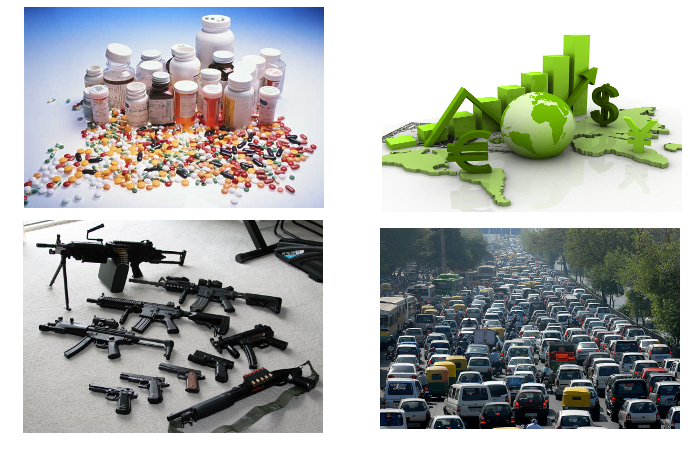
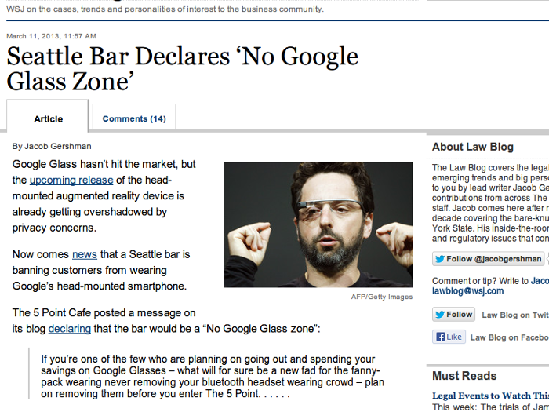

Through the Google Glass and what Malice Found There
Presenter Notes
tante
- blog http://tante.cc
- twitter @tante
- scientist
- likes monkeys

Presenter Notes
Regulating technology and data use
Presenter Notes
- Subtitle
- Talk: How should we regulate tech and data?
Regulation
Presenter Notes
- Not a popular topic really
- You tend to piss someone off
Examples of Regulation

Presenter Notes
- Examples of regulation (amonst others)
Definition
"Regulation creates, limits, or constrains a right, creates or limits a duty, or allocates a responsibility."
Presenter Notes
- creating rights? Hellyeah!
- But the rest? Meh to Boooo!
Why regulate?
- Protection
- "General Will"
- Interest Group transfers
- Irreversibility
- ...
Presenter Notes
- Protecting weaker entities
- "General WilL" vs. the "Will of all" (Rousseau)
- Transfers as in redistribute wealth
- Irreversibility: "We only borrowed the world from our kids"
- There are more but these are key
Who regulates?
- "the Mainstream"
- (Social norms)
- Trade associations
- Contracts
- etc.
But mostly
- The Government
Presenter Notes
- What you can do without punishment
- Treaties and whatnot
Regulation is about power
Presenter Notes
Examples of regulation of tech
- guns/weapons
- cars
-
nuclear power plants
-
Bad example: German "Hacker Paragraph"
Presenter Notes
- they do mostly work
- mostly
The Hacker Paragraph
Presenter Notes
- §202c
- Punishment up tp one year
- for giving access or distributing "Hacker Tools"
- We know it's stupid, but what's the actual reason?
Dual Use
Presenter Notes
- Technologies that have a bias can be regulated quite well
- guns
- Technologies with dual use way worse
- knives
- hacker tools
What's good regulation?
- As small as possible
- Solves a real problem
- Consistent
- Precise
Presenter Notes
- It's always a limitation so let's not overuse it
- It needs a clear problem to address
- It has to fit in with the rest of the rules
- Or it's hard to follow/understand/legitimize
- It needs to be very clear what it forbids/regulates
- always hard to find middle ground
Regulation is hard, why are we even speaking about this shit?
Presenter Notes
- Why not do something nice?
- Well it's Google's fault
Google GLΛSS

Presenter Notes
- April 4th 2012 first concept video
- Before anyone had any specs we had an outcry
- Glassholes
- "Gargoyles" (Snow Crash, Neil Stephenson)
No GLΛSS Zone

Presenter Notes
- Was in fact a publicity stunt
- but resonated quite well
- "Glass on the toilet?"
Playing catch-up
Presenter Notes
- This approach has a big problem
- Whenever you regulte a tech like this you play catch up
- small change: New Product
Some people realized that
Presenter Notes
- And they chose a wider approach
Stop Cyborgs
Presenter Notes
- Smarter
- Broader Approach (at least in name)
- Pointed out a big problem
Cyborgs
"A cyborg, short for
cybernetic organism,
is a being with both
organic and cybernetic parts."
(Wikipedia)
Presenter Notes
- Enno Park talked about cyborgs yesterday
- Glass makes our own cyborgism visible, perceptible
- (But we have been cyborgs for a long while)
- Our digital exosekeleton belongs to us, is part of us
Backfire
Presenter Notes
- Now we basically declared technological devices parts of us
- that makes regulation hard
"But we are not really regulating devices we are regulating the gathering and processing of data"
Presenter Notes
- Defense
- People know that regulating devices is hard (dual use)
- In the glass case it's about what people cando with it
What is data?
Presenter Notes
- we know tech
- we know what works and what doesn't
- So is data regulated like tech?
- What is data?
Data == Cyborg?
[Bild Data Star Trek]
Presenter Notes
* Naaa, that isn't right
Short philosophical detour
Presenter Notes
- Don't worry it won't hurt
The mind, the body and the world
Presenter Notes
- You are your mind (software)
- Your mind "runs" on hardware (Body and Brain)
- How do you access the world?
- Your hardware creates data from the world (somehow)
- That data often lies
- "You" only have data
End Detour
Presenter Notes
- And we're back on track
Data is the representation of
a part of reality.
Presenter Notes
- Data codifies aspects
- Names, Age, color
- Can all be expressed as data
Data is nothing without Interpretation
Presenter Notes
- What is a "33"? An age? A length? A price?
Data -> Information -> Knowledge
Presenter Notes
- We transform Data through Interpretation into Information
- 0111010100 => JPG
- We transform information to knowledge by integrating it in our mind
Data is our access to the world
Presenter Notes
- Regulating data needs to be done very carefully
- we'd never allow "You must not look at red things"
- Data is in the end what allows us to make decisions
- Data is the base for every thought
Consistency
Presenter Notes
- One of the apsects for good regulation
- "natural" vs. "digital" perception becomes more and more arbitrary
- digital contact lenses, digital hearing aids
Let's regulate GLΛSS
Presenter Notes
- It was the hook for this talk so let's do it
- given all we know now, how should we regulate glass?
GLΛSS rules (legal)
You may not publish video or audio recordings of others without explicit consent.
(unless it's a public situation).
Presenter Notes
- consistent
- does not overregulate a person's perception
- gives protection to people who don't want their data published
- Everything else would be overreaching by the government
- (uploading data to backup services is not publication)
GLΛSS rules (social)
- Don't be an ass.
- If people ask you to deactivate them, do so. (see 1)
- Be transparent with what you do
- Respect your fellow earthlings
- Don't be an ass.
Presenter Notes
- Try to see the needs of others
- Their wishes might not be rational, but who cares
- Don't annoy anyone without a very good reason
- Be prepared to get some flak for it
Final thoughts
- regulation seems simple but tends to go overboard
- GLΛSS is nothing new, it just makes something visible
- Cyborgisation has been going on for ages and gains more speed
Presenter Notes
Discuss
Presenter Notes
- Vielen Dank für die Aufmerksamkeit
- Whaddaya think?
-
Slides:
-
Contact:
- http://twitter.com/tante
- mailto:tante@tante.cc
- tante@jabber.org